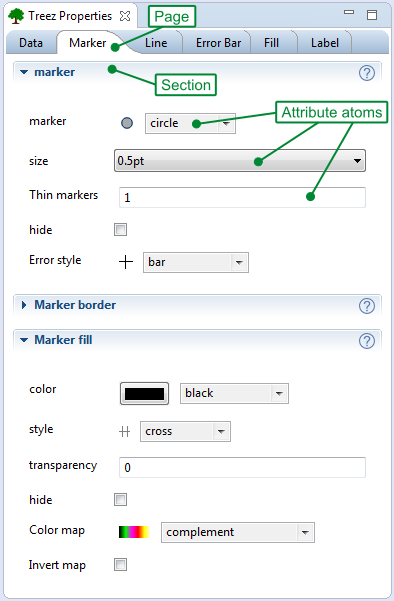

Treez Properties View
Purpose
The shows the properties of a Treez atom.
Treez atoms are also represented by corresponding tree nodes in the .
The allows the user to inspect and edit the
properties of an atom. Each atom is responsible for providing a corresponding
control for the through its so called AtomControlAdaption.
In addition to input widgets like text fields and check boxes, some atoms provide actions for the
(e.g. a play button that starts a simulation).
Hierarchical structure
The is organized in an hierarchical structure:
- The topmost elements are pages that are shown as tabs in a tab folder.
- A page contains sections.
- A section contains attribute atoms. A section might also contain sub sections. Each section can
be collapsed and each section has a blue header as well as a tool bar. If you click on the help button
of a section you will get context specific help.
- An attribute atom provides widgets (e.g. text field, combo box, table view) that can be used
to edit one or several properties.
